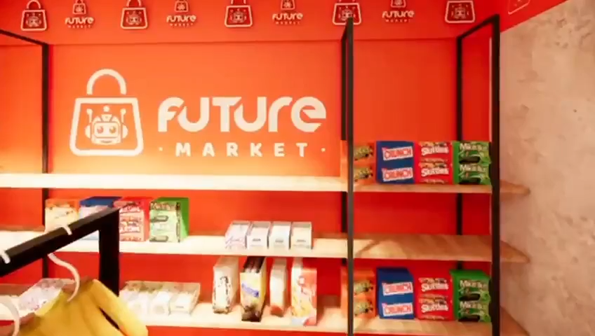

Mídia indisponível
Verifique a conexão, o arquivo config.json e a mídia principal. Em produção, essa página mantém a mídia em cache para reduzir dependência de internet após a primeira sincronização.

Verifique a conexão, o arquivo config.json e a mídia principal. Em produção, essa página mantém a mídia em cache para reduzir dependência de internet após a primeira sincronização.